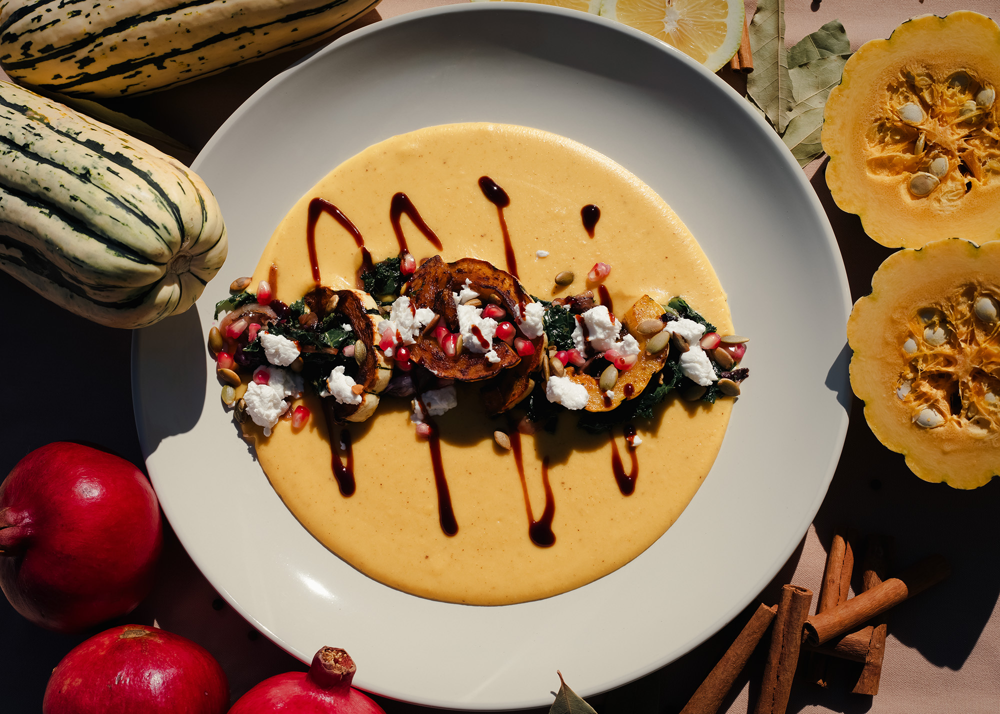
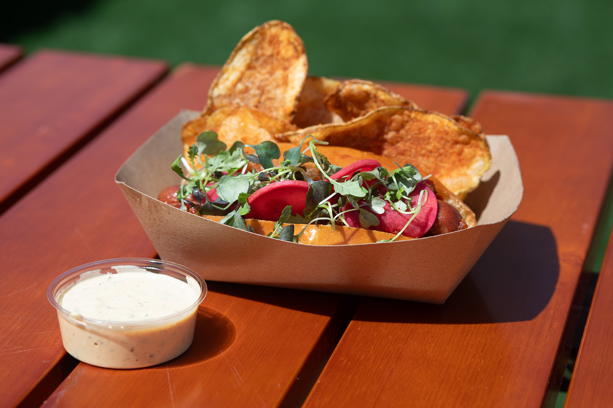
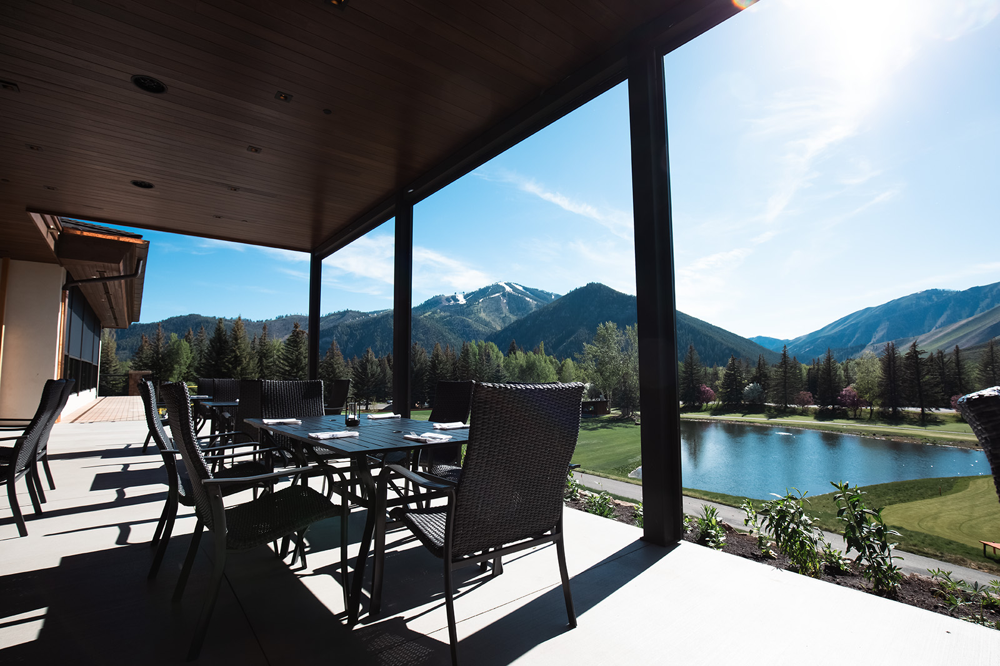
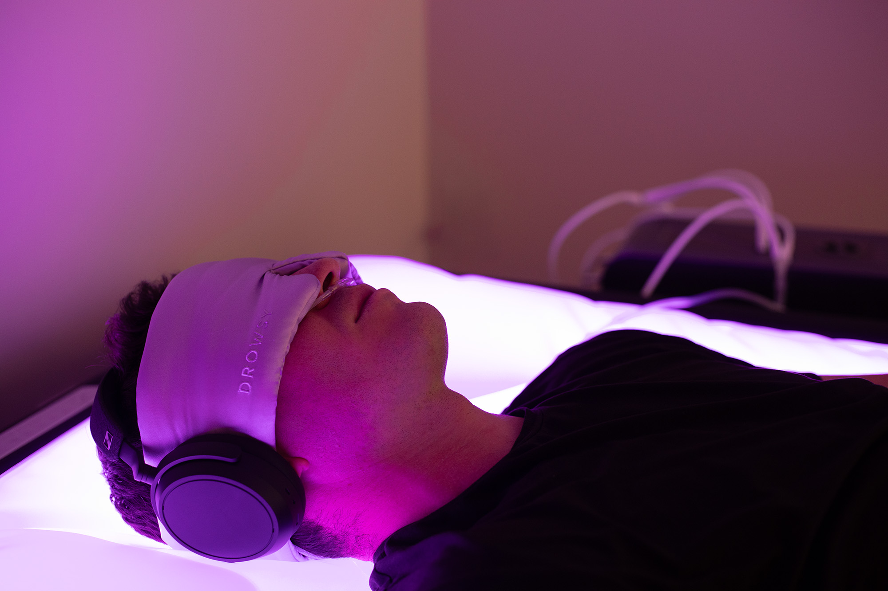

Social media for three brands
Took over social for a golf course and restaurant on top of the wellness club, building a separate voice and posting plan for each.
[Result: e.g. followers up X% in 6 months]
Instagram, Facebook, Google, Yelp
Marketing coordinator handling social, email, photography, and web for a wellness club, a golf course, and a restaurant. Looking for my next role in tech and AI.
I run marketing for three brands under one roof: a wellness club, a golf course, and a restaurant. That means social media, newsletters, photography, websites, and app marketing, often in the same afternoon.
Now I'm teaching myself the technical side: VS Code, GitHub, and working with AI tools to build things, not just write about them. This site is my first project.
Took over social for a golf course and restaurant on top of the wellness club, building a separate voice and posting plan for each.
[Result: e.g. followers up X% in 6 months]
Instagram, Facebook, Google, Yelp
Built a website survey that sends answers straight to a Google Sheet, then launched it with a Mailchimp campaign.
[Result: e.g. X responses, X% open rate]
Web forms, Google Sheets, Mailchimp
Shot food, venue, and aerial photos used in menus, ads, and the website, replacing paid stock and outside photographers.
[Result: e.g. photos used across X campaigns]
Drone, photo editing
Designed and coded by me, working alongside Claude, and published with GitHub Pages.
My first coding project, built from scratch
HTML, CSS, VS Code, GitHub, Claude
Resizing one photo for Instagram, stories, and Facebook used to take me several minutes in a design app. I built a Python tool that does a whole folder at once.
The hard part was cropping. A plain center crop cut people's heads off, so I added face detection and subject detection to keep the important part in frame. Flyers and graphics get fit onto a blurred background instead, so no text is lost.


Food, venue, and drone photography I shot for menus, ads, and social media.




I'm open to marketing roles in tech and AI, and I'd love to hear about yours.